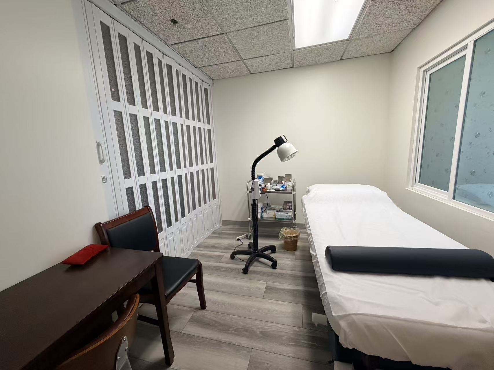

Ander Acupuncture & Herbs — 1310 W. Stewart Dr., Suite 302, Orange, CA
A calm, welcoming space designed to help you slow down and heal.
Ander Acupuncture & Herbs — 1310 W. Stewart Dr., Suite 302, Orange, CA
About the Space
From the moment you walk through the door, you'll notice that Ander Acupuncture and Herbs is different. The clinic is designed with simplicity, cleanliness, and warmth in mind — a space that feels calm the moment you arrive.
Subtle Chinese design elements, natural materials, and carefully chosen plants create an atmosphere that gently invites you to slow down. We believe the healing process begins before your treatment does.
Every treatment room is private and quiet, allowing you to fully relax, unwind, and receive care without distraction. Dr. Li takes great care to ensure the environment reflects the respect and attention she gives to each patient.
The clinic is conveniently located in Orange, CA, with accessible parking and a comfortable waiting area stocked with calming teas and reading material.
We keep appointment schedules thoughtfully spaced so you are never rushed — your time with Dr. Li is yours fully.

What to Expect
All treatments take place in fully private, sound-dampened rooms to ensure your comfort and confidentiality.
Herbal formulas are prepared fresh and dispensed directly at the clinic for maximum potency and convenience.
All needles are single-use and sterile. The clinic is maintained to the highest standards of cleanliness.
Services are available in both English and Mandarin Chinese — so you can always communicate comfortably.
Find Us
Address: 1310 W. Stewart Dr., Suite 302, Orange, CA 92868 | Phone: (657) 221-0331
Book an Appointment